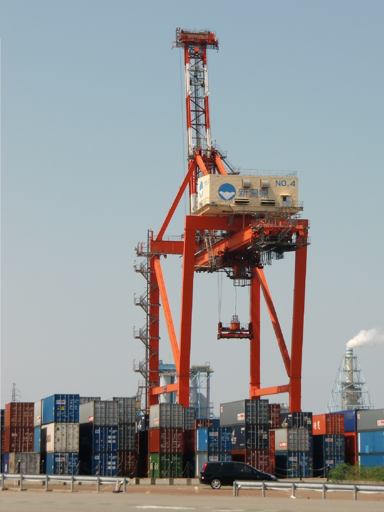

Tariflar va bojxona bojlari qanday ishlaydi: kim to'laydi va narxlarga qanday ta'sir qiladi
Tarif — davlat chet eldan keltirilgan tovarlarga soladigan soliq. Uni chegarada chet ellik eksportchi emas, import qiluvchi to'laydi; tadqiqotlarga ko'ra xarajat ko'p hollarda ichki narxlar orqali iste'molchiga o'tadi. Mana bu tizim qanday ishlaydi.

Tarif (bojxona boji) — davlat chet eldan sotib olingan tovarlarga soladigan soliq bo'lib, uni amalda deyarli barcha mamlakatlar qo'llaydi. Jahon savdo tashkiloti (JST/WTO) ta'rifiga ko'ra: «Tariffs or customs duties are a tax on products purchased from abroad... Tariffs are usually designed to collect revenue or to give a price advantage to a domestic product over an imported one» — ya'ni tariflar odatda byudjet daromadi yig'ish yoki ichki mahsulotga importga nisbatan narx ustunligini berish uchun belgilanadi. Tariflar asosan importga solinadi; eksport bojlari kamroq uchraydi (Manba: JST/WTO — Tariffs).
Kim to'laydi va kim yig'adi
Qonun bo'yicha tarifni chet ellik eksportchi emas, tovarni mamlakatga olib kiruvchi import qiluvchi (importer of record) to'laydi. To'lov tovar chegaradan o'tganda milliy bojxona idorasiga — masalan, AQShda Bojxona va chegara xavfsizligi xizmatiga (CBP) — amalga oshiriladi. Bojxona brokeri jalb qilinsa ham, bojlar, soliqlar va yig'imlar uchun pirovard javobgarlik import qiluvchida qoladi (Manba: U.S. Customs and Border Protection — Entry Summary and Post Release Processes).
Xarajatni oxir-oqibat kim ko'taradi
To'lovni import qiluvchi amalga oshirsa-da, iqtisodiy yuk kimga tushishi alohida masala. 2018–2019-yillardagi AQSh tariflarini o'rgangan ko'plab tadqiqotlar (jumladan Amiti, Redding va Weinstein; Milliy iqtisodiy tadqiqotlar byurosi — NBER) tarif xarajati asosan ichki import qiluvchilar va iste'molchilarga yuqori narx ko'rinishida o'tganini, chet ellik eksportchilar tomonidan deyarli qoplanmaganini aniqlagan. Hisob-kitoblarga ko'ra, 2019-yilga kelib bu tariflar AQSh iste'molchilari va kompaniyalariga oyiga taxminan 3,2 milliard dollar qo'shimcha soliq xarajatini keltirgan. Bu natija 2018–2019 davri uchun kuchli empirik xulosa; o'tish darajasi tovar va vaqtga qarab farq qilishi mumkin (Manba: NBER — The Impact of the 2018 Tariffs on Prices and Welfare; USITC — Section 232 and 301 Trade Actions in 2018).

Tarif turlari
Uch asosiy ko'rinishi bor: ad valorem tarif — tovar qiymatining foizi sifatida (masalan, 500 dollarlik buyumning 5 foizi = 25 dollar); spetsifik tarif — har bir birlik yoki og'irlik uchun belgilangan summa, narxdan qat'i nazar; tarif-kvota (tariff-rate quota) — belgilangan miqdorgacha past (yoki nol) stavka, undan ortiq miqdorga esa yuqori stavka qo'llaniladi (Manba: JST/WTO — Tariffs).
Davlatlar nega tarif qo'llaydi
Keltiriladigan asosiy sabablar: byudjet daromadi (tarixan davlat daromadining muhim manbai bo'lgan); ichki ishlab chiqarishni himoya qilish, jumladan «yosh tarmoq» argumenti (yangi tarmoqni raqobatga bardosh bergунcha himoyalash); adolatsiz deb baholangan savdoga yoki boshqa davlatning tariflariga javob (qasos tariflari); muzokaralarda bosim vositasi. Bu maqsadlarga haqiqatda erishilishi iqtisodchilar o'rtasida bahsli; maqola ularni faqat keltirilayotgan sabablar sifatida bayon etadi (Manba: JST/WTO — Tariffs; JST/WTO — Principles of the trading system).
Import, eksport va savdo balansi
Import — chet eldan sotib olingan tovar yoki xizmat; eksport — chetga sotilgan tovar yoki xizmat. Savdo taqchilligi (deficit) — ma'lum davrda import eksportdan ko'p bo'lsa; savdo profitsiti (surplus) — aksincha. Xalqaro valyuta fondi (XVF/IMF) tadqiqotlari ta'kidlaydiki, ikki davlat o'rtasidagi ikki tomonlama savdo taqchilligi o'z-o'zidan «qarz» ham, aldanganlik o'lchovi ham emas — u asosan makroiqtisodiy omillarni (jamg'arma va investitsiya nisbati, ta'minot zanjirlari) aks ettiradi, bitta davlatning savdo siyosatini emas (Manba: IMF Working Paper WP/20/210 — Are Bilateral Trade Balances Irrelevant?).
Jahon savdo tashkiloti qoidalari
JST (WTO) tariflarni global qoidalar bilan tartibga soladi. Eng qulaylik rejimi (Most-Favoured-Nation, MFN) tamoyiliga ko'ra: «Grant someone a special favour... and you have to do the same for all other WTO members» — bir a'zoga berilgan imtiyoz (masalan, past boj) barcha a'zolarga teng tatbiq etilishi shart (istisnolar — erkin savdo bitimlari). «Bog'langan» (bound) stavka — a'zo oshirmaslikka va'da bergan yuqori chegara; «amalda qo'llanadigan» (applied) stavka undan past bo'lishi mumkin. Har bir a'zoning majburiyatlari tarif jadvalida qayd etiladi (Manba: JST/WTO — Understanding the WTO: Principles of the trading system).
Qasos tariflari va savdo urushlari
Bir davlatning tarifi boshqa davlatning qasos tariflarini keltirib chiqarishi va «savdo urushi»ga aylanishi mumkin. 2018–2019-yillardagi AQSh–Xitoy misolida AQSh bosqichma-bosqich Xitoy importiga tarif joriy etib, 2019-yil oxiriga kelib 300 milliard dollardan ortiq tovarga boj solgan; Xitoy ham AQSh tovarlariga javob tariflari bilan bosqichma-bosqich javob qaytargan. Aniq raqamlar manbaga va «e'lon qilingan» yoki «amalda joriy etilgan» tafovutiga qarab farq qiladi, shuning uchun «taxminan» deb olish to'g'ri (Manba: Congressional Research Service — Section 301 Tariffs on Goods from China).
O'zbekiston va Markaziy Osiyo
2026-yil oxiri holatiga ko'ra O'zbekiston hali JST a'zosi emas — u a'zolik jarayonida (ishchi guruhining 13-majlisi 2026-yil iyulda bo'lib o'tgan) va shu paytgacha o'z milliy bojxona tariflarini qo'llaydi. Qo'shnilardan Qozog'iston va Qirg'iziston — Yevrosiyo iqtisodiy ittifoqi (EOII/EAEU) a'zolari bo'lib, ittifoqning umumiy tashqi tarifini qo'llaydi; O'zbekiston esa EOIIda kuzatuvchi maqomida bo'lib, uning bojxona ittifoqi tarkibiga kirmaydi va tariflarni mustaqil belgilaydi. Bu maqola umumiy ma'lumot; aniq tovar bo'yicha bojxona idorasidan tekshirib ko'ring (Manba: JST/WTO — Uzbekistan accession; EAEU — Common Customs Tariff).

Manbalar
- World Trade Organization — Tariffs
- World Trade Organization — Understanding the WTO: Principles of the trading system
- U.S. Customs and Border Protection — Entry Summary and Post Release Processes
- Congressional Research Service — Section 301 Tariffs on Goods from China (LSB10553)
- IMF Working Paper WP/20/210 — Are Bilateral Trade Balances Irrelevant?